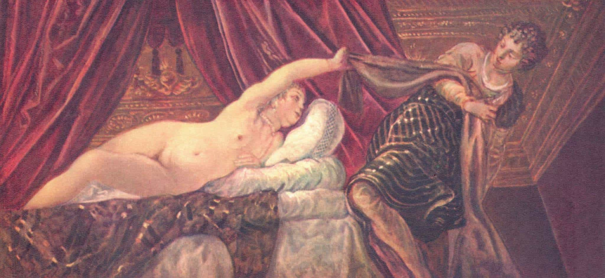

I'm Ted, I read old books, and my interest in Stanley Kubrick has nothing, absolutely nothing, to do with my interest in conspiracy theories, not at all, no way. And I like my privacy.


Our revered spokesman Roosh recently Tweeted that Rolling Stone’s UVA rape hoax story was the “biggest rape hoax in the history of mankind.”
"Dear sir, I'm writing an article for the magazine that perpetuated the biggest rape hoax in the history of mankind. May we have your consent to twist your words and make you appear as a bigger monster than you already are?" pic.twitter.com/M73637K9gw
— Roosh (@rooshv) December 14, 2017
Although I tend to agree with our esteemed leader’s insights 19 out of 20 times, this one falls into the 1 out of 20 in which I will humbly disagree. There is one rape hoax that is much bigger in the history of mankind, for it changed the direction of history: Potiphar’s wife falsely accusing Joseph of raping her, in Genesis 39 in the Old Testament.
First lets review the context. The Old Testament reviews the history of the universe and mankind, leading up to the three Hebrew Patriarchs, Abraham, Isaac, and Jacob. Jacob has twelve sons, and eleven of them are very jealous of the prodigy Joseph, whom they sell to merchants while telling their father that he died.
Joseph becomes a slave to an Egyptian nobleman named Potiphar and then eventually rises up in the hierarchy to become the Prime Minister of Egypt and ultimately saves his family, Egypt, and the Jews. It is Joseph’s and his brothers’ descendants in Egypt who then escape from Egypt (led by Moses), to round out the narrative of the Pentateuch, the core of the Old Testament.
But there’s a curious moment while Joseph is a slave in Potiphar’s house. The moment is worth reviewing, in the original words. Here’s the classic NIV translation:
Now Joseph was well-built and handsome, and after a while his master’s wife took notice of Joseph and said, “Come to bed with me!”
But he refused. “With me in charge,” he told her, “my master does not concern himself with anything in the house; everything he owns he has entrusted to my care. No one is greater in this house than I am. My master has withheld nothing from me except you, because you are his wife. How then could I do such a wicked thing and sin against God?” And though she spoke to Joseph day after day, he refused to go to bed with her or even be with her.
One day he went into the house to attend to his duties, and none of the household servants was inside. She caught him by his cloak and said, “Come to bed with me!” But he left his cloak in her hand and ran out of the house.
When she saw that he had left his cloak in her hand and had run out of the house, she called her household servants. “Look,” she said to them, “this Hebrew has been brought to us to make sport of us! He came in here to sleep with me, but I screamed. When he heard me scream for help, he left his cloak beside me and ran out of the house.”
She kept his cloak beside her until his master came home. Then she told him this story: “That Hebrew slave you brought us came to me to make sport of me. But as soon as I screamed for help, he left his cloak beside me and ran out of the house.”
When his master heard the story his wife told him, saying, “This is how your slave treated me,” he burned with anger. Joseph’s master took him and put him in prison, the place where the king’s prisoners were confined.
Let’s summarize that in modern English. Joseph was sexually attractive. The boss’s wife was a desperate housewife with pent-up sexual frustration. She tried to sleep with Joseph repeatedly but he turned her down every time. When they were alone she tried one more time and he got away, but she got his coat and used thatas evidence for a false rape accusation that ultimately landed him in jail.
When we summarize it like that, it becomes clear: it’s a modern story. This is what is happening to men day after day in 2017.

There are a few key lessons from the Joseph story that are important to remind ourselves of…
We may think women are crazy now and we may think that modern movements like “feminism” has made women feel particularly entitled, but it turns out that these patterns have been around for thousands of years.
Similarly, “desperate housewives” letting out their sexual frustration in many ways has also been around for since time immemorial.
None of the other poor women Joseph was in contact launched a false rape accusation against him, but the richest woman did. The women making false rape accusations today are overwhelmingly materially comfortable white women with too much time on their hands.
The bible is very direct that Joseph was attractive: “Now Joseph was well-built and handsome.” Even in ancient times it was the high-status man whom women would swoon over, not the ugly ones.
Joseph was able to ward off all of Potiphar’s wife’s attempts to seduce him as long as there were other people around. But when they were alone it turned into a “he said, she said” situation in which the man always loses. Joseph would have avoided the situation had he used the Mike Pence rule to never be alone with a woman.
What makes Joseph greater than most men is his almost inhuman ability to resist temptation and do the right thing. If I were in Joseph’s position, I don’t know if I would have been able to resist the wife. That’s also why I’m just a low writer for ROK rather than the savior of an entire race! But the lesson is critical: what separates “great men” from “average men” is that great men have the ability to resist short-term temptation so they can focus on their long-term objectives.
Joseph left clothing with the wife, which she used as evidence in her false rape allegation. Lesson: never, never leave any evidence behind. Not even a selfie together!
Potiphar would have probably believed his wife even if she didn’t have the evidence of the forgotten jacket. That’s because Potiphar was painted as the classic rich beta who blindly and slavishly followed his wife around and believed every lie she said. As much as Joseph is a model to be followed, Potiphar believing everything his wife says is a model not to follow.
The most important point, however, is that Joseph used his time in prison to focus on developing his abilities—analyzing what he saw to be able to make accurate predictions as to the future—and ultimately become the leader of the Egyptian government behind the figurehead king. We may view Joseph going to prison as a problem—but it was precisely the time in prison that led him to meet the king that led him to the Prime Ministership and thus to save his family and race. Even the hardest times have positive outcomes if we stay on target.
It may not be a coincidence that those making the false rape accusations today, along with the journalists that support them, don’t know the Bible. I’m not even saying that they are mostly non-religious (that is obvious), but they haven’t even read it. They hate a book and a culture that they don’t even know. This is not too dissimilar from how the MSM hates the alt-right and ROK without even attempting understanding us.
If they had read the bible, they would see that their actions today are just repeating an ancient male-female pattern, and that might make them question themselves just a little bit.
Much more about conspiracy theories and protecting your privacy.
Read More: Why Hasn’t Jackie Coakley Been Punished For Starting The Biggest Rape Hoax Of The Decade?